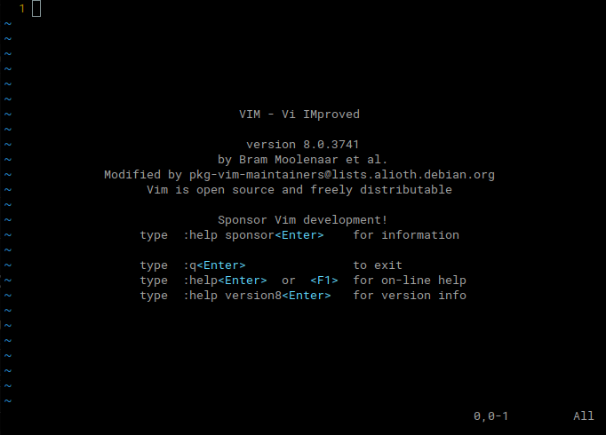
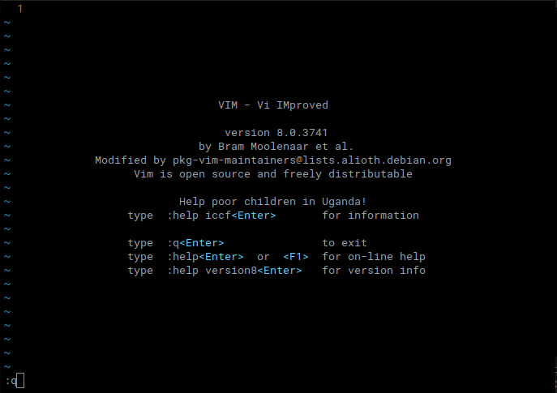
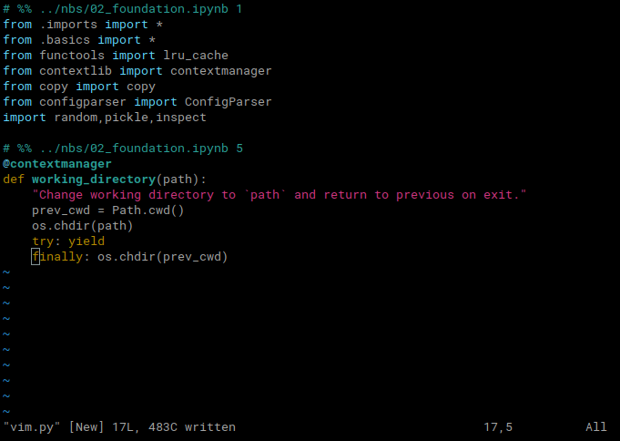
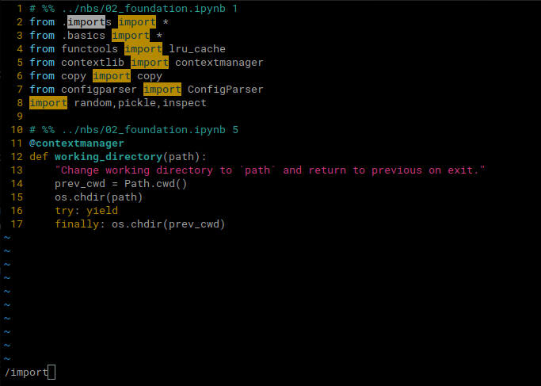
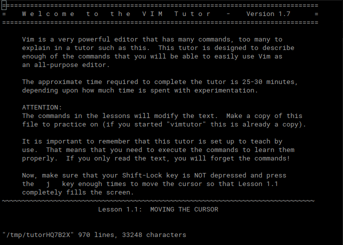

Live coding 5
Live coding 5
In this blog, I will cover vim and ctags based on the Youtube video.
Vim is a great tool because of availability on command line interface and its power. Some editors, such as VS code, do not run on terminal. Therefore, if we want to edit files in paperspace, we have to use something that runs in this environment. There are nano, emacs, vim, and more. Nano is good for starting out because it has commands on the bottom of the screen. However, it is not as powerful as emacs and vim. We will learn about vim.
Vim
Basic commands
Vim should be installed, but if it is not, install it using sudo apt install vim on linux or brew install vim on mac. To execute vim, simply type vim on terminal. We will see this screen:

The main screen tells us about the version and author. It also says we can exit by typing :q. If we type :, vim displays it on the bottom left corner. So, if we type :q, it will be on the bottom left corner like this:

:q commandIf we press Enter, we quit vim. We can come back to vim by typing vim again in terminal.
So, there are two modes in vim. One is command mode, which we are on right now, and the other is insert mode. On command mode, we cannot type text we want to insert. To enter insert mode, we can type i. Now, we can start typing text we want to add. Rather than writing something from scratch, let’s copy some text for practice. Here is a source code from fastcore. You can copy it and paste it in your file by typing i to get into insert mode and Ctrl-Shift-v to paste.
# %% ../nbs/02_foundation.ipynb 1
from .imports import *
from .basics import *
from functools import lru_cache
from contextlib import contextmanager
from copy import copy
from configparser import ConfigParser
import random,pickle,inspect
# %% ../nbs/02_foundation.ipynb 5
@contextmanager
def working_directory(path):
"Change working directory to `path` and return to previous on exit."
prev_cwd = Path.cwd()
os.chdir(path)
try: yield
finally: os.chdir(prev_cwd)After pasting the code, we can press Esc to get out of insert mode.
After finishing editing a file, press Esc to switch to command mode. It’s good to get in the habbit of switching to command mode all the time because I know what mode it will be when I see my vim.
When I was first learning vim, I didn’t check what mode I was in. When I was in command mode, I thought I left my vim on insert mode. So, I started typing some code from the book I was reading, and I realized that I messed up my code by typing different commands. Thankfully, vim had u command to undo previous commands, but it was not very enjoyable. So, I always put my vim on command mode after editing, and I double check what mode I am in when I open up the terminal by typing Esc. Pressing Esc guarantees that vim will be on command mode because it stays on command mode even if it was on command mode.
Then, we can save this file by typing :w <filename>.py. Replace <filename>.py with whatever name you want. As long as the filename ends with .py, we will get syntax highlighting. After saving the file with a name, we can type :w to save the file. The :w command can be combined with :q to save and quit at the same time by typing :wq.

I saved it as vim.py, and it is more readable with colors. Here, we can move around the cursor by using either arrow keys or by using h, j, k, and l. It seems random that hjkl moves our cursor in certain way. However, after getting used to using these keys, it becomes more comfortable to use these keys than to use arrow keys. Here’s what those keys do:
h: leftj: downk: upl: down
So, there are other ways to enter edit mode. These commands are different from i because they move the cursor to different location and enters into the edit mode. Let’s start by looking at o and Shift-o. o adds a line below and moves the cursor to the next line. Shift-o adds a line on the previous line and moves the cursor there as well. So, combining the command with Shift can be seen as an variation of a command for some commands. Another way to enter edit mode is Shift-i, which moves the cursor to the beginning of the text of a line. To start editing at the end of the line, Shift-a can be used.
o: next lineShift-o: previous lineShift-i: beginning of the lineShift-a: end of line
u
When you editted something or used a command, but made a mistake and wanted to undo that, press u to undo. You can press u multiple times to go back further. However, if you pressed too many us and wanted to undo the u, you can redo it with Ctrl-r. If you have no idea what’s going on and file changes cannot be fixed with u and Ctrl-r, you can quit the file without saving by typing :q!. Then you can come back to the file by opening it again.
Moving one character by character is time consuming, and there’s a better way to move: move by words. We can use w to move forward or b to move backward. If that’s still not enough movement, we can press } and { to move forward and backward by paragraphs.
Sometimes, it is useful to just jump to last line of the file. We can press G for that, and to move to first line, gg can be used.
That’s enough moving around for now. Let’s move onto some editing.
To delete a line, we can press dd. To change a line, it is cc.
Another useful command is .. This command repeats the last command. If we deleted a line, we can just press . to do it again.
Combining commands
We can combine commands we learned earlier with numbers. For instance, we can move down 5 times by pressing 5j and move forward 3 words by 3w. Try to practice and feel how it is.
Another way to combine commands is by combining editing commands with movement commands. For instance, we can delete next 5 lines by pressing 5dj or d5j and change three words by 3cw or c3w. Try to come up with different combinations with all the movement commands. Also, after changing words, it can be repeated using ..
By combining commands, we can see how powerful these commands are.
Pattern matching
We can start searching with /. If want to search import, we can type /import and press Enter. Then, we can move onto the next occurrence with n and back with N. Instead of plain text, regex can be used as well.

There’s more we can do using patterns. Let’s say we want to remove all lines starting with ‘from’ in this file. There are many ways to do this. We can do dd multiple times to delete those lines. We can also use . after using dd to save typing. Another way us typing :g/^from/d. Just like other commands starting with :, it will be displayed on the bottom left. So, this is a global command that finds a pattern and executes a command. It can also take range of lines before g to limit the effect. Try using different command or pattern and see what you can do.
Summary
As we have seen, vim can be very powerful by combining commands. We can also use patterns to apply commands on certain lines. There are so much more in vim than this. If you are interested, you can use vimtutor to learn more about it. Make sure to practice to get better.

Here’s a summary of commands we covered today:
| Command | Meaning |
|---|---|
i |
Enter insert mode |
Esc |
Enter command mode |
h |
Move the cursor left |
j |
Move the cursor down |
k |
Move the cursor up |
l |
Move the cursor right |
o |
Add a line before the cursor and enter insert mode |
Shift-o |
Add a line after the cursor and enter insert mode |
u |
Undo |
Ctrl-r |
Redo |
w |
Move forward by a word |
b |
Move backward by a word |
} |
Move to next paragraph |
{ |
Move to previous paragraph |
dd |
Delete a line |
cc |
Change a line |
. |
Repeat last command |
/pattern |
Search the ‘pattern’ |
:g/pattern/command |
Execute command on all the lines matching the pattern. ex) :g/import/d |
:w |
Save the file |
:w <filename> |
Save a file to <filename> |
:q |
Exit vim |
:q! |
Exit vim while discarding all changes |
:wq |
Save the file and exit |
Conclusion
So, we learned about vim and ctags. These tools are very useful. Once you get used to vim by playing around a little bit, you will find them quite comfortable.